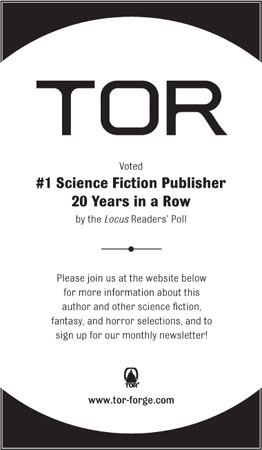

This is a work of fiction. All of the characters, organizations, and events portrayed in this novel are either products of the author’s imagination or are used fictitiously.
THE WELL OF ASCENSION: BOOK TWO OF MISTBORN
Copyright © 2007 by Brandon Sanderson
All rights reserved, including the right to reproduce this book, or portions thereof, in any form.
Edited by Moshe Feder
Maps and ornaments by Isaac Stewart
A Tor Book
Published by Tom Doherty Associates, LLC
175 Fifth Avenue
New York, NY 10010
Tor® is a registered trademark of Tom Doherty Associates, LLC.
ISBN: 978-0-7653-5613-0
